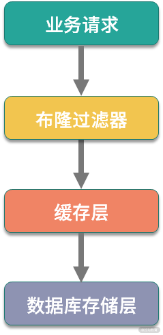
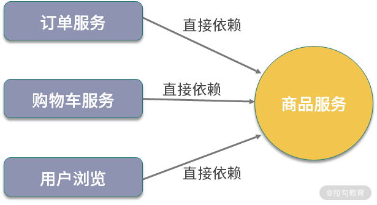

- 00 开篇词：搭建分布式知识体系，挑战高薪 Offer.md.html
- 01 如何证明分布式系统的 CAP 理论？.md.html
- 02 不同数据一致性模型有哪些应用？.md.html
- 03 如何透彻理解 Paxos 算法？.md.html
- 04 ZooKeeper 如何保证数据一致性？.md.html
- 05 共识问题：区块链如何确认记账权？.md.html
- 06 如何准备一线互联网公司面试？.md.html
- 07 分布式事务有哪些解决方案？.md.html
- 08 对比两阶段提交，三阶段协议有哪些改进？.md.html
- 09 MySQL 数据库如何实现 XA 规范？.md.html
- 10 如何在业务中体现 TCC 事务模型？.md.html
- 11 分布式锁有哪些应用场景和实现？.md.html
- 12 如何使用 Redis 快速实现分布式锁？.md.html
- 13 分布式事务考点梳理 + 高频面试题.md.html
- 14 如何理解 RPC 远程服务调用？.md.html
- 15 为什么微服务需要 API 网关？.md.html
- 16 如何实现服务注册与发现？.md.html
- 17 如何实现分布式调用跟踪？.md.html
- 18 分布式下如何实现配置管理？.md.html
- 19 容器化升级对服务有哪些影响？.md.html
- 20 ServiceMesh：服务网格有哪些应用？.md.html
- 21 Dubbo vs Spring Cloud：两大技术栈如何选型？.md.html
- 22 分布式服务考点梳理 + 高频面试题.md.html
- 23 读写分离如何在业务中落地？.md.html
- 24 为什么需要分库分表，如何实现？.md.html
- 25 存储拆分后，如何解决唯一主键问题？.md.html
- 26 分库分表以后，如何实现扩容？.md.html
- 27 NoSQL 数据库有哪些典型应用？.md.html
- 28 ElasticSearch 是如何建立索引的？.md.html
- 29 分布式存储考点梳理 + 高频面试题.md.html
- 30 消息队列有哪些应用场景？.md.html
- 31 集群消费和广播消费有什么区别？.md.html
- 32 业务上需要顺序消费，怎么保证时序性？.md.html
- 33 消息幂等：如何保证消息不被重复消费？.md.html
- 34 高可用：如何实现消息队列的 HA？.md.html
- 35 消息队列选型：Kafka 如何实现高性能？.md.html
- 36 消息队列选型：RocketMQ 适用哪些场景？.md.html
- 37 消息队列考点梳理 + 高频面试题.md.html
- 38 不止业务缓存，分布式系统中还有哪些缓存？.md.html
- 39 如何避免缓存穿透、缓存击穿、缓存雪崩？.md.html
- 40 经典问题：先更新数据库，还是先更新缓存？.md.html
- 41 失效策略：缓存过期都有哪些策略？.md.html
- 42 负载均衡：一致性哈希解决了哪些问题？.md.html
- 43 缓存高可用：缓存如何保证高可用？.md.html
- 44 分布式缓存考点梳理 + 高频面试题.md.html
- 45 从双十一看高可用的保障方式.md.html
- 46 高并发场景下如何实现系统限流？.md.html
- 47 降级和熔断：如何增强服务稳定性？.md.html
- 48 如何选择适合业务的负载均衡策略？.md.html
- 49 线上服务有哪些稳定性指标？.md.html
- 50 分布式下有哪些好用的监控组件？.md.html
- 51 分布式下如何实现统一日志系统？.md.html
- 52 分布式路漫漫，厚积薄发才是王道.md.html
39 如何避免缓存穿透、缓存击穿、缓存雪崩？
设计缓存系统不得不考虑的问题是缓存穿透、缓存击穿与失效时的雪崩效应，同时，关于这几种问题场景的认识及解决方案，也是面试中的高频考点。今天的内容，可以说是缓存应用的三板斧，下面我们一起来分析一下缓存应用中的这几个热门问题。
缓存穿透
先来看一下缓存穿透，顾名思义，是指业务请求穿过了缓存层，落到持久化存储上。在大多数场景下，我们应用缓存是为了承载前端业务请求，缓存被击穿以后，如果请求量比较大，则会导致数据库出现风险。

以双十一为例，由于各类促销活动的叠加，整体网站的访问量、商品曝光量会是平时的千倍甚至万倍。巨大的流量暴涨，单靠数据库是不能承载的，如果缓存不能很好的工作，可能会影响数据库的稳定性，继而直接影响整体服务。
那么哪些场景下会发生缓存穿透呢？
- 不合理的缓存失效策略
缓存失效策略如果设置不合理，比如设置了大量缓存在同一时间点失效，那么将导致大量缓存数据在同一时刻发生缓存穿透，业务请求直接打到持久化存储层。
- 外部用户的恶意攻击
外部恶意用户利用不存在的 Key，来构造大批量不存在的数据请求我们的服务，由于缓存中并不存在这些数据，因此海量请求全部穿过缓存，落在数据库中，将导致数据库崩溃。
介绍了出现缓存穿透的原因，那么缓存穿透如何在业务中避免呢？首先是设置合理的缓存失效策略，避免缓存数据在同一时间失效。对于缓存失效策略的讨论，将在后面的第 36 课时中进行介绍，这里暂时不展开。
缓存穿透还可以通过缓存空数据的方式避免。缓存空数据非常好理解，就是针对数据库不存在的数据，在查询为空时，添加一个对应 null 的值到缓存中，这样在下次请求时，可以通过缓存的结果判断数据库中是否存在，避免反复的请求数据库。不过这种方式，需要考虑空数据的 Key 在新增后的处理，感兴趣的同学可以思考一下。
另外一个方案是使用布隆过滤器。布隆过滤器是应用非常广泛的一种数据结构，我们熟悉的 Bitmap，可以看作是一种特殊的布隆过滤器，布隆过滤器的实现细节不是本课时关注的重点，如果你对布隆过滤器还不熟悉，可以抽空查阅数据结构相关的资料学习。
使用布隆过滤器，可在缓存前添加一层过滤，布隆过滤器映射到缓存，在缓存中不存在的数据，会在布隆过滤器这一层拦截，从而保护缓存和数据库的安全。

缓存击穿
缓存击穿也是缓存应用常见的问题场景，其是一个非常形象的表达。具体表现：前端请求大量的访问某个热点 Key，而这个热点 Key 在某个时刻恰好失效，导致请求全部落到数据库上。
不知道你有没有听过二八定律（80/20 定律、帕累托法则），百度百科中对二八定律的具体描述是这样的：
在任何一组东西中，最重要的只占其中一小部分，约 20%，其余 80% 尽管是多数，却是次要的，因此又称二八定律。
二八定律在缓存应用中也不能避免，往往是 20% 的缓存数据，承担了 80% 或者更高的请求，剩下 80% 的缓存数据，仅仅承担了 20% 的访问流量。
由于二八定律的存在，缓存击穿虽然可能只是一小部分数据失效，但这部分数据如果恰好是热点数据，还是会对系统造成非常大的危险。
缓存击穿和缓存穿透都是降低了整体的缓存命中率，不过在表现上比较类似。缓存击穿可以认为是缓存穿透的一种特殊场景，所以在解决方案上也可以应用上面提到的那几种手段。
接下来看一下缓存雪崩，其是缓存穿透和缓存击穿升级的一种问题场景。
缓存雪崩
缓存雪崩的表现有两种，一种是大量的缓存数据在同一时刻失效，请求全部转发到数据库，将导致数据库压力过大，服务宕机；另外一种是缓存服务不稳定，比如负责缓存的 Redis 集群宕机。
在业务开发中，出现缓存雪崩非常危险，可能会直接导致大规模服务不可用，因为缓存失效时导致的雪崩，一方面是整体的数据存储链路，另一方面是服务调用链路，最终导致微服务整体的对外服务出现问题。
我们知道，微服务本身就存在雪崩效应，在电商场景中，如果商品服务不可用，最终可能会导致依赖的订单服务、购物车服务、用户浏览等级联出现故障。
你考虑一下，如果商品服务出现缓存雪崩，继而商品服务不可用，关联的周边服务都会受影响。

那么缓存雪崩在业务中如何避免呢？
首先是明确缓存集群的容量峰值，通过合理的限流和降级，防止大量请求直接拖垮缓存；其次是做好缓存集群的高可用，以 Redis 为例，可以通过部署 RedisCluster、Proxy 等不同的缓存集群，来实现缓存集群高可用。
缓存稳定性
今天介绍的内容，是大家在缓存应用时的一些总结，现在我希望你跳出这几个名词，从一个更高的维度来思考缓存应用的稳定性。
首先明确应用缓存的目的，大部分缓存都是内存数据库，并且可以支持非常高的 QPS，所以缓存应用，可以防止海量业务请求击垮数据库，保护正常的服务运行。
其次，在考虑缓存的稳定性时，要从两个方面展开，第一个是缓存的数据，第二个是缓存容器也就是缓存服务本身的稳定性。
从缓存数据的层面，有一个缓存命中率的概念，是指落到缓存上的请求占整体请求总量的占比。缓存命中率在电商大促等场景中是一个非常关键的指标，我们要尽可能地提高缓存数据的命中率，一般要求达到 90% 以上，如果是大促等场景，会要求 99% 以上的命中率。
从缓存服务的层面，缓存集群本身也是一个服务，也会有集群部署，服务可用率，服务的最大容量等。在应用缓存时，要对缓存服务进行压测，明确缓存的最大水位，如果当前系统容量超过缓存阈值，就要通过其他的高可用手段来进行调整，比如服务限流，请求降级，使用消息队列等不同的方式。
总结
这一课时的内容，分享了分布式缓存应用和面试的经典问题：缓存穿透、缓存击穿、缓存雪崩，以及对应这几种业务场景的解决方案。今天介绍的这几个问题场景，只是对缓存应用时一些高频问题的抽象，在实际业务开发中，永远都是具体情况具体分析，对不同的业务，适用不同的解决方案。
你在应用缓存时有哪些心得体会，比如如何提高缓存命中率，如何处理热点 Key 等，欢迎留言进行分享。